Inklusi dan Pemenuhan Hak Penyandang Disabilitas
Mendorong kesetaraan, aksesibilitas, perlindungan hak, serta partisipasi bermakna penyandang disabilitas, khususnya perempuan dan kaum muda, dalam kehidupan sosial dan pembangunan.


Misi Kita, Kekuatan Bersama
Membangun ruang inklusif di mana setiap individu memiliki kesempatan yang sama untuk bertumbuh, berkarya, dan berdaya tanpa sekat
FKM BKA YWU merupakan organisasi dan komunitas yang berfokus pada advokasi hak-hak perempuan muda serta perempuan penyandang disabilitas.
Gerakan ini didorong oleh tiga pilar strategis yang menggerakkan seluruh program FKM BKA YWU dalam mewujudkan kesetaraan hak, kapabilitas vokasi, dan kemandirian wirausaha disabilitas.

Tiga pilar strategis yang menggerakkan seluruh program FKM BKA YWU dalam mewujudkan kesetaraan hak, kapabilitas vokasi, dan kemandirian wirausaha disabilitas.
Mendorong kesetaraan, aksesibilitas, perlindungan hak, serta partisipasi bermakna penyandang disabilitas, khususnya perempuan dan kaum muda, dalam kehidupan sosial dan pembangunan.
Memperkuat kapasitas, kemandirian, kepemimpinan, dan peran perempuan serta kaum muda dengan disabilitas dalam pengambilan keputusan, pemberdayaan ekonomi, dan advokasi masyarakat.
Mendorong kebijakan publik yang responsif gender dan disabilitas melalui pemantauan SDGs, pengumpulan data berbasis masyarakat, penguatan jejaring, serta dialog dengan pemerintah dan pemangku kepentingan.
Aceh, Sumatera Utara, Sumatera Selatan, Sumatera Barat, Kepulauan Riau, Jawa Barat, Jawa Tengah, Jawa Timur, Sulawesi Selatan, Papua Barat, Papua Barat Daya, Nusa Tenggara Timur, Nusa Tenggara Barat dan Bali
Terwujudnya masyarakat yang inklusif, adil, setara, dan berkelanjutan, dengan perempuan, kaum muda, serta penyandang disabilitas memiliki kesempatan yang setara untuk berpartisipasi, memimpin, dan memperoleh hak-haknya dalam pembangunan.
Rangkaian program dan aktivitas strategis FKM BKA YWU dalam mewujudkan inklusi dan kesetaraan.

Pelatihan kesiapsiagaan, simulasi evakuasi, SOP PRB inklusif, serta aksesibilitas fasilitas publik.

Pembentukan unit YWU, kepemimpinan perempuan muda, kegiatan inklusi, dan kampanye publik.

FGD, penyusunan rancangan peraturan wali kota, konsultasi pemerintah, serta advokasi pemenuhan hak.

Penguatan kapasitas, pengumpulan data, dialog kebijakan, dan advokasi SDGs yang responsif gender dan disabilitas.

Pelatihan kewirausahaan serta pengembangan usaha seperti kerajinan sandal pandan, token papua, dan produk Goodi Bag dari canvas.
Ikuti momen keseruan dan wawasan terbaru dari kegiatan kami langsung di Instagram.
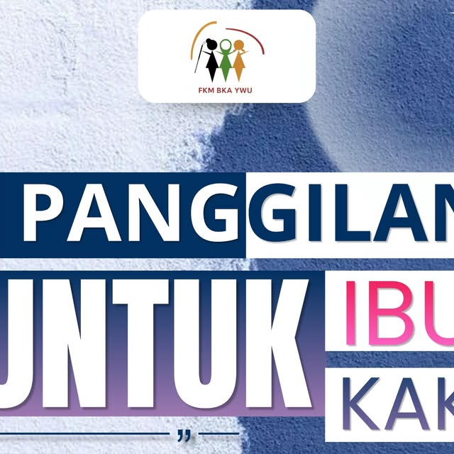
PostinganProgram Pendampingan & Penguatan Kapasitas secara GRATIS bagi orang tua, keluarga, dan guru SLB yang mendampingi anak dengan autisme di Medan.
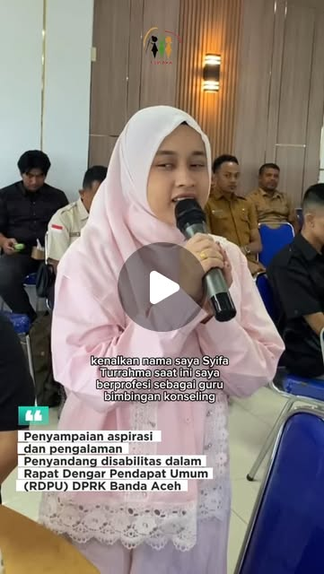
Reels VideoAspirasi Syifa Turrahma (Guru BK ASN SLB) dalam RDPU DPRK Banda Aceh: Menyerukan kesempatan kerja nyata dan akses pendidikan inklusif bagi penyandang disabilitas.
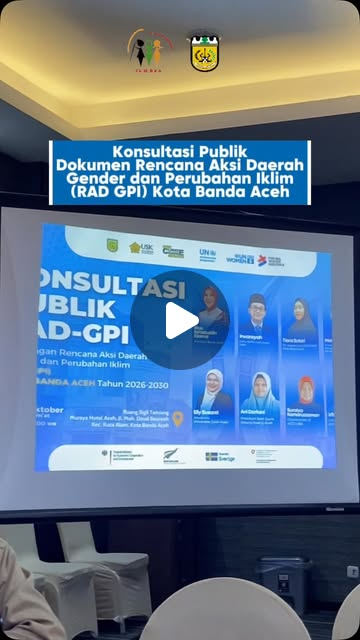
Reels VideoKonsultasi Publik Rencana Aksi Daerah Gender & Perubahan Iklim (RAD GPI) Kota Banda Aceh untuk aksi iklim yang inklusif dan responsif gender.
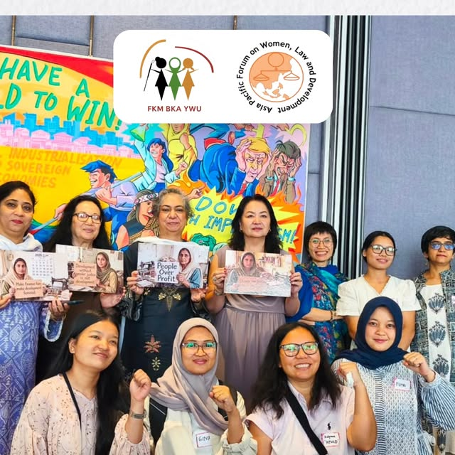
PostinganFeminist Festival of Resistance & Alternatives: Bersolidaritas memperjuangkan keadilan gender, menentang ketimpangan, dan merajut masa depan inklusif.
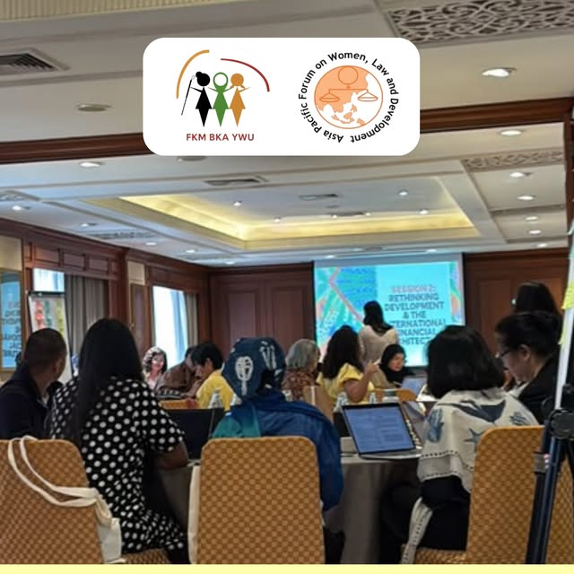
PostinganPartisipasi dalam forum global ECOSOC untuk menyuarakan aspirasi komunitas dan memastikan hak-hak perempuan disabilitas terwakili di tingkat internasional.
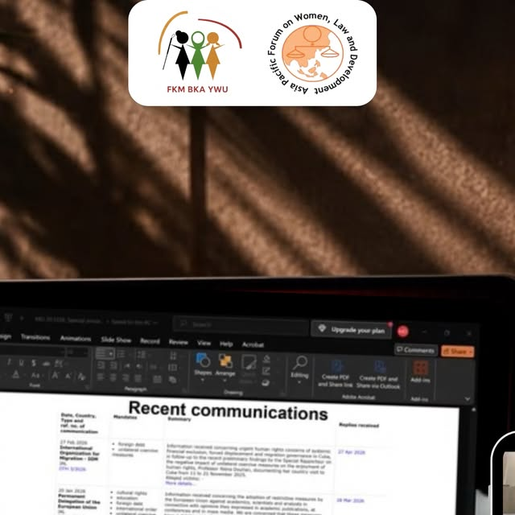
PostinganSesi kolaborasi dan penguatan kapasitas daring: Memperluas wawasan dan bertukar gagasan untuk pemberdayaan perempuan serta kesetaraan hakiki.
Statistik pencapaian program pendampingan, vokasi adaptif, dan pemberdayaan inklusif FKM BKA YWU.
Pelatihan pengurangan risiko bencana yang inklusif.
Kegiatan simulasi evakuasi bencana ramah disabilitas.
Penyandang disabilitas yang telah mengikuti pelatihan.
Peserta aktif yang mengikuti simulasi evakuasi.
Fasilitas publik yang telah diaudit aksesibilitasnya.
Sesi edukasi dan advokasi inklusi secara daring.
Rangkaian program dan kegiatan sejak tahun 2014.
Bergerak bersama berbagai lembaga internasional dan nasional dalam mendorong pemenuhan hak, kesetaraan gender, dan kemandirian wirausaha disabilitas.
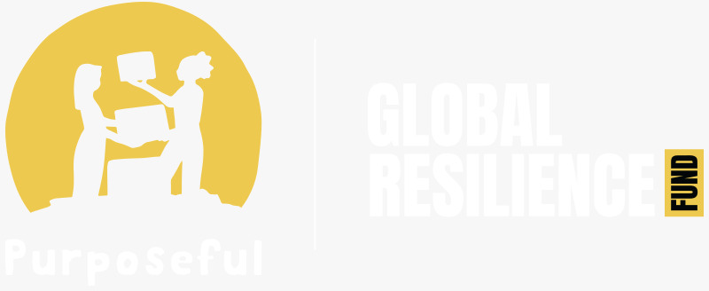
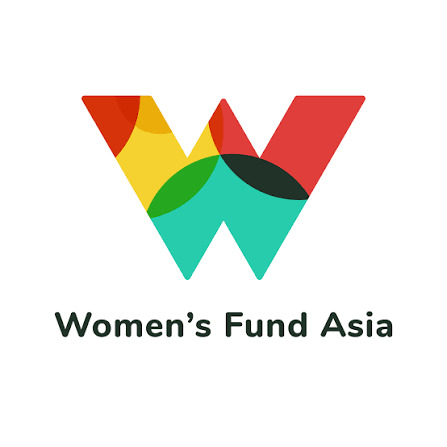
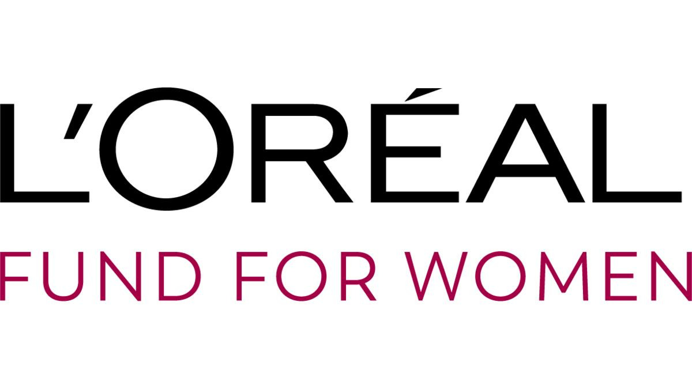
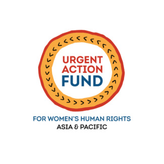
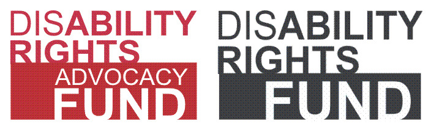
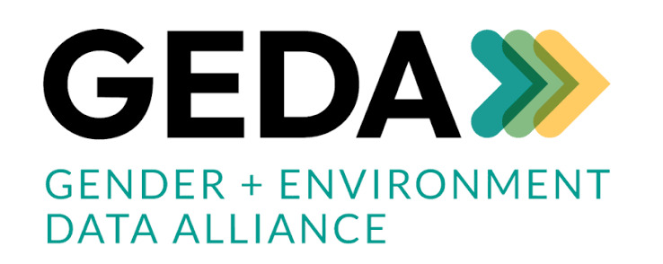
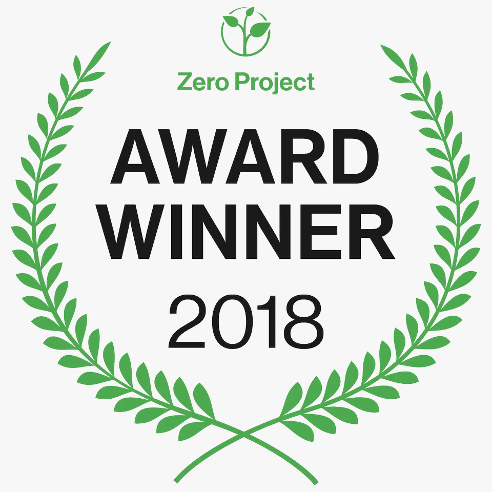
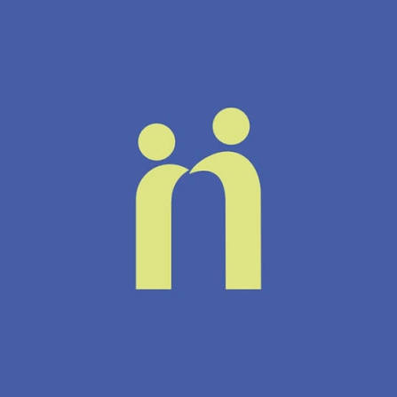
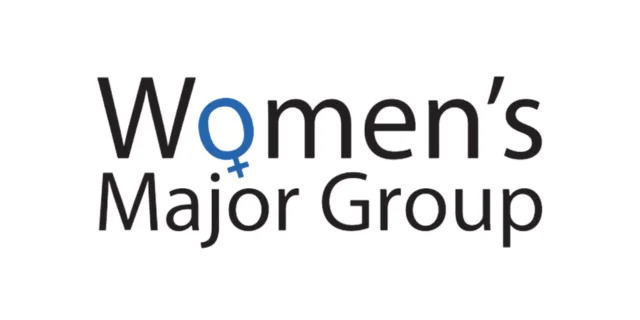
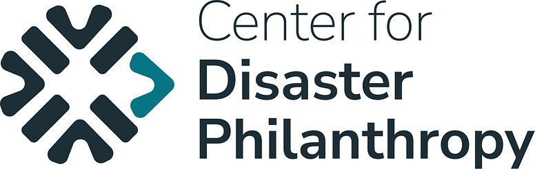
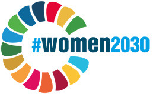
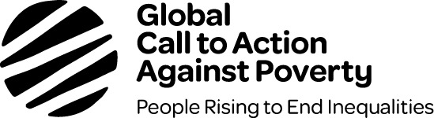
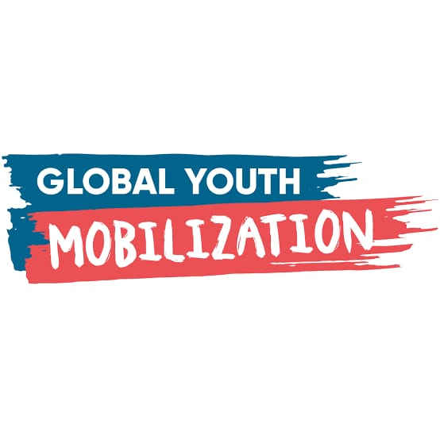
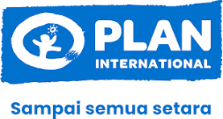